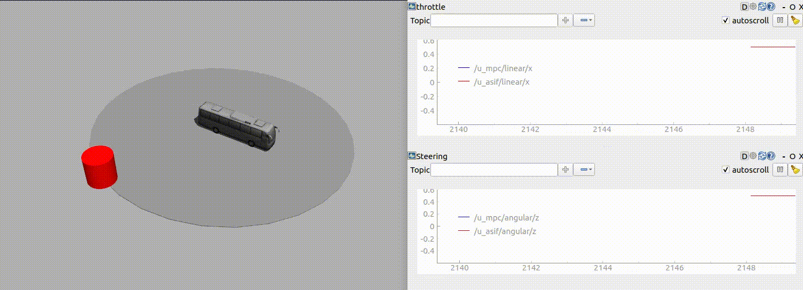

Tool collection for control and estimation on Lie groups leveraging the smooth library.
- Requirements: C++20, Eigen 3.4, boost::numeric::odeint, smooth
- Documentation
Control on Lie groups
These controllers are implemented for systems with dynamics on the form where
T is a smooth::feedback::Time, X is a smooth::LieGroup, and U is a smooth::Manifold.
Nonlinearities are handled via linearization around a reference point or trajectory. For group-linear dynamics this automatically results in a linear system in the tangent space, in which case these algorithms are expected to work very well. Linearization is done via automatic differentiation. For this to work with the most performant methods (e.g. autodiff) the functions must be templated on the scalar type. The dynamical system
can be defined via a lambda function that supports automatic differentiation as follows:
PID Control
- Model-free
- Assumes that inputs control body acceleration. See
examples/pid_se2.cppfor an example of allocating PID inputs to actuators.
Example PID controller on SE(2)
Model-Predictive Control
- Automatic linearization and time discretization of nonlinear continuous dynamics
- Define state and input reference trajectories via arbitrary functions
T -> XandT -> Ufor a time type T. The bus in the video above uses MPC to track the boundary of the circle.
Example: Model-predictive control for the system Sigma (see also examples/mpc_asif_vehicle.cpp)
Active Set Invariance Filtering (ASIF)
- Minimally invasive filtering of a control input in order to enforce state constraints. The bus in the video above is using an ASIF that avoids the red cylinder.
- Automatic differentiation of nonlinear continuous dynamics and constraints
- Theory (non-Lie group case) is described in e.g. Thomas Gurriet's Ph.D. thesis
Example: Safety filtering for the system Sigma
Estimation on Lie groups
Estimators take system models on the form where
X is a smooth::LieGroup, and measurements on the form .
To use in a feedback loop for a controlled system use partial application:
Extended Kalman Filter
- Templated over dynamics and measurement models
- Automatic differentiation
- Reduces to standard Kalman filter (KF) for linear models on Rn
- Reduces to Invariant Extended Kalman Filter (IEKF) for group-linear models on Lie groups
Example: localization with a known 2D landmark for the system SigmaCL
Optimization
MPC and ASIF relies on online quadratic program optimization.
Fast QP Solver
- Eigen-native port of the operator splitting QP solver.
- Solves both dense and sparse problems.
- Eigen lazy evaluations enable fast SIMD in the compiled assembly.
The plot below compares solution times (lower is better) for random square QPs over three different levels of sparsity. The results suggest that the dense solver is the best choice except for problems that are both large and very sparse. Performance is however highly problem-dependent and should ideally be evaluated on a per-application basis.

The results are generated from the benchmarking program in benchmark/.
Example: Define and solve a dynamically sized dense quadratic program.